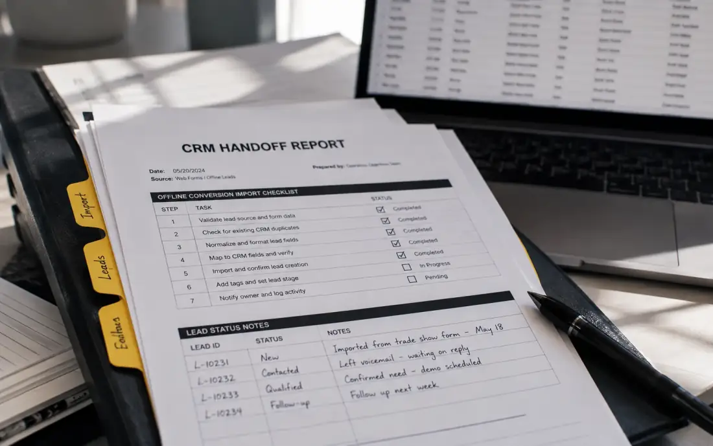

Tracking & Automation
Data you can use.
Conversion tracking, analytics, CRM feedback and performance automation designed to give advertising better signals and teams faster decisions.
Conversion Tracking ✦
GA4 ✦
Tag Manager ✦
CRM Integration ✦
Offline Conversions ✦
Automation ✦
Measurement infrastructure
Track the outcome.
We do not want campaigns learning from clicks alone. The goal is measurement that connects advertising to meaningful business outcomes.
Tracking can connect Google Ads, analytics, Tag Manager, CRM systems, offline conversions, revenue and lead-quality data into a clearer performance picture.
Reliable conversion
measurement.
CRM and offline
conversion feedback.
Revenue and lead-quality
tracking.
Automated reporting,
alerts and monitoring.
Data capability
Better performance signals.
Measurement infrastructure should make important actions visible and give advertising systems useful conversion information to optimise against.
Conversion Tracking
Measure the actions that advertising is expected to produce.
- Forms
- Purchases
- Registrations
- Conversion value
Analytics
Connect campaign activity with website and conversion behaviour.
- Google Analytics
- Tag Manager
- Event tracking
- Attribution
CRM Feedback
Connect downstream outcomes back to marketing where systems allow it.
- Qualified leads
- Offline conversions
- Customer outcomes
- Revenue feedback
Automation
Reduce repetitive monitoring and surface performance changes more quickly.
- Automated reporting
- Campaign alerts
- Anomaly detection
- Performance insights
Measurement flow
Advertising to outcome.
Measurement becomes more useful when conversion information can move through the systems that matter to the business.
Campaign
Advertising creates the initial interaction.
Website
User behaviour and conversion events.
Conversion
Track the meaningful business action.
CRM / Revenue
Add qualification or commercial value.
Optimise
Feed better outcome data into decisions.
SIGNAL
Measurement designed around
the outcomes that actually matter.
Data strategy
Track less. Measure better.
More events do not automatically create better measurement. The important question is whether the tracking helps advertising and the business make better decisions.
Define conversions
Identify which actions should influence optimisation.
Connect outcomes
Add CRM, qualification or revenue data where possible.
Improve decisions
Use cleaner signals for reporting and campaign optimisation.
Measurement layers
Data across the stack.
Track conversions.
Build reliable measurement around the actions campaigns are expected to generate.
- Conversion actions
- Event tracking
- Purchase value
- Call tracking context
Behaviour context.
Analytics helps connect traffic, campaign interactions and website behaviour around meaningful actions.
- Google Analytics
- Google Tag Manager
- Events
- Attribution
Downstream results.
CRM and offline data can reveal which marketing conversions become qualified leads, customers or revenue.
- CRM integration
- Offline conversions
- Lead-quality tracking
- Revenue feedback

Faster alerts.
Automation can reduce repetitive checking and make important performance changes easier to notice.
- Automated reporting
- Budget monitoring
- Campaign alerts
- Anomaly detection
Automated monitoring
Less manual work. Faster decisions.
Monitoring systems can help surface meaningful changes without requiring every metric to be checked manually.
ALERT
Campaign changes
DATA
Conversion signals
AUTO
Reporting workflows
Performance and budget monitoring can highlight changes that deserve attention.
AI-assisted analysis can support anomaly detection and automated performance insights.
Tracking checks help catch broken events before reporting decisions drift.
Automated summaries keep teams close to the changes that need action.
Measurement process
Measure. Connect. Improve.
Audit
Review current tracking, analytics and available business data.
Define
Identify the conversions and outcomes that matter.
Connect
Configure measurement across required systems.
Validate
Check whether the data is being captured reliably.
Automate
Add useful reporting, monitoring and alerts where appropriate.
Data scenarios
Better inputs. Better outputs.
Why it matters
Cleaner data. Faster action.
Tracking and automation are useful when they reduce uncertainty and make advertising decisions clearer.
Better optimisation signals
Campaign systems work with more meaningful conversion information.
Deeper business context
CRM, revenue and qualification feedback can connect marketing with downstream outcomes.
Clearer reporting
Reporting can focus on meaningful changes instead of overwhelming teams with metrics.
Less repetitive work
Automation can handle routine reporting and monitoring so attention stays on decisions.
Questions
Data, clarified.
Common questions before reviewing tracking and automation infrastructure.
Yes. Existing conversion actions, analytics configuration and available advertising signals can be reviewed for relevance and measurement quality.
Offline conversion and CRM feedback can be considered where the available systems support the required data flow.
Yes. Analytics and Tag Manager can form part of the measurement setup depending on the website, required events and campaign goals.
Depending on the project, automation may include reporting, monitoring, budget alerts, campaign alerts, conversion-data workflows and performance insights.